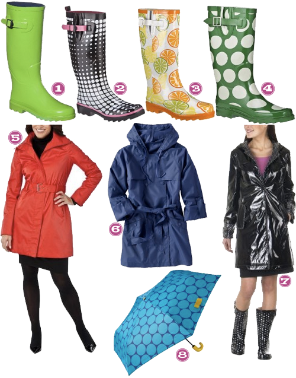

Bring Cute Rain Gear.

- Target, Zetta Tall Rain Boots
- Target, Capelli Banded Dots Rain Boots
- Target, Citrus City Rain Boots
- Target, Mod Dot Rain Boots
- Target, Mossimo Zipper Front Rain Jacket
- Old Navy, Rain Jacket in a Packet
- Target, Merona Rain Jacket
- Old Navy, Printed Umbrella


Recent Comments